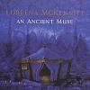

Celtic Lyrics Corner > Artists & Groups > Loreena McKennitt > An Ancient Muse > Penelope's Song
|  | Penelope's Song |
| Credits : | Loreena McKennitt |
| Appears On : | An Ancient Muse |
| Language : | English |
Lyrics :
Now that the time has come
Soon gone is the day
There upon some distant shore
You'll hear me say
Long as the day in the summer time
Deep as the wine-dark sea
I'll keep your heart with mine
'Til you come to me
There like a bird I'd fly
High through the air
Reaching for the sun's full rays
Oh I'd find you there
And in the night when our dreams are still
Or when the wind falls free
I'll keep your heart with mine
'Til you come to me
Now that the time has come
Soon gone is the day
There upon some distant shore
You'll hear me say
Long as the day in the summer time
Deep as the wine-dark sea
I'll keep your heart with mine
'Til you come to me